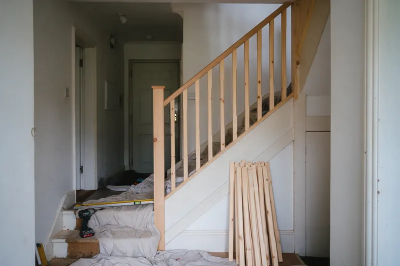
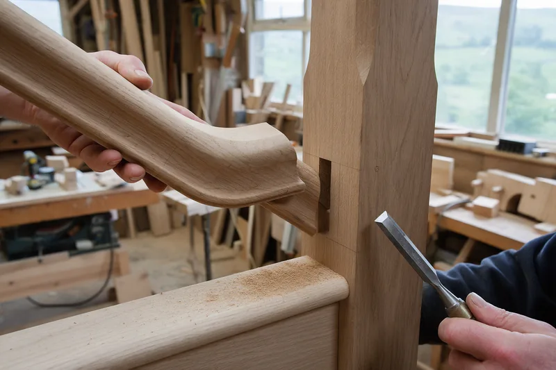

What people actually ring about
Two things, mostly. The stairs creak, or the banister looks like it belongs to another house and feels loose when you hold it. Both are usually fixable without a new staircase, and a new staircase is a big job that takes out the hall for days, so it is worth finding out first.
The other call is a change of spindles and handrail, which is the single biggest change you can make to a hall for what it costs. The flight stays, the strings stay, and what changes is everything you can see and touch.
Why a staircase creaks
A creak is timber rubbing against timber, and on a traditional stair there are only a few places it can be. The tread sits in a housing cut into the string at each side. Tapered wedges are driven in behind the tread and the riser from underneath to hold them tight in those housings. Small triangular glue blocks sit in the corner where the tread meets the riser to stop the joint flexing.
Give that a century of people running up and down it and the glue has gone brittle, the wedges have worked loose and half the blocks have dropped off. Now every step moves a fraction and rubs. The fix, where we can get underneath, is to take the wedges out, clean them and the housings up, and drive them back in with fresh glue, then put blocks back where they are missing. From underneath it is a proper repair. From the top it is more limited, because you are working blind through the gap at the back of the tread, but it still gets most of it.
What not to do
Nail or screw straight down through the tread into the riser. It feels like a fix for a month, then the two pieces work against the fixing and the creak comes back with a split in the tread to go with it. Nothing goes through a face you can see unless there is no other way, and then it is counterbored and plugged rather than filled.

Generated photoGenerated for this demo. Not a photograph of a real job.

Generated photoThe handrail into the newel. Offered up dry first, because a joint that does not close dry will not close with glue in it.
The creak
Where the noise actually comes from.
Two steps in section, with the four parts that either hold a stair still or let it move. Three of the four are underneath, which is why a creak gets fixed from below where that is possible.
Drawn in the browser rather than photographed.
On the job
How this one usually goes.
- A proper look, top and bottomEvery tread walked on and listened to, the newel posts and handrail checked for movement, and a look underneath if the stairs are open from below or there is a cupboard under them.
- Fix the structure before the pretty bitsLoose wedges, missing glue blocks and a newel post that moves when you lean on it all get sorted first. There is no point putting new spindles on a flight that still moves.
- Old spindles and rail outCarefully, because the holes and housings they came out of are what the new ones go into and they are worth keeping sound. Old nails pulled rather than punched deeper.
- Newel posts and handrail firstThe posts get fixed solid into the string and the floor framing, then the handrail is cut and fitted into them. Everything else is set off the rail, so it goes on first.
- Spindles cut and fittedEach one measured and cut to its own length, because no two steps on an old flight are identical, with the top and bottom angles taken off the rail rather than off a table.
- Checked, then finishedHands on the rail at the top, the bottom and the middle. Then sanded, filled where fixings had to show, and painted, oiled or waxed. Treads hoovered and the hall left clear.
A sample running order for this demo. Yours depends on the property and what the timber turns out to be doing.
Questions
Asked about this job.
Can you repair a creaky staircase?
Usually, and usually without a new one. The creak is two pieces of timber rubbing, so the job is working out which two. If we can get underneath, the wedges that hold the treads come out, get cleaned and go back in with fresh glue, and new glue blocks go in where they are missing.
If the underside is plastered or boarded in, we work from the top, which is more limited but still gets most of it. What we will not do is drive a nail through the tread and call it fixed.
Can we change just the spindles and the handrail?
Yes, and it is the job that changes a hall most for what it costs. The flight and the strings stay where they are, and everything you see and touch is new.
The one thing that gets checked first is whether the newel posts are solid, because the whole banister hangs off them. A post that moves gets fixed properly before any new rail goes on it.
Do you do open tread or glass balustrades?
Open riser stairs and glass panel balustrades both get asked about and they are a different kind of job: there are rules about gaps, loadings and what has to be sign-ed off, and they can mean altering the structure of the flight.
We will tell you honestly whether what you are picturing can be done to the stairs you have, and where it needs somebody else involved. We would rather say that at the start than halfway through.
Will the stairs be usable while you work?
Mostly yes, in stages, and it is planned round that from the start because people live in the house. There are usually a few hours where the rail is off and you want to be careful going up, and we will tell you which hours those are.
If there is somebody in the house who cannot manage stairs without a rail, say so when you ring. It changes the order of the work rather than the price.
Can you make the space under the stairs useful?
That is one of our favourite jobs. A shaped door following the line of the flight, shelving to one side, a hanging rail or a set of drawers under the bottom treads.
It is all scribed work, because the underside of a staircase is a wedge shape and nothing bought fits it. Have a look at Fitted wardrobes and storage for how that side of it works.
General trade knowledge written for this demo, not advice on your property.
Our work
Sample jobs like this.
 Generated photoUnder the stairs, used at lastTodmorden · Sample
Generated photoUnder the stairs, used at lastTodmorden · SampleMade up samples with generated pictures. Tap one for the detail.
Also
The other things we do.
Internal doors and fire doors
Hung to the opening you have rather than the one the door was made for. Recesses cut by hand, gaps even all the way round, and it still shuts in August.
More →Fitted wardrobes and storage
Built into the alcove you have, out of square walls and all. Scribed tight to the plaster, up to the ceiling, with no gap on top collecting boxes.
More →Skirting, architrave and flooring prep
Long runs scribed into corners rather than mitred and filled, architrave tight at the head, and floors made flat and quiet before anybody lays anything on them.
More →Sash and timber window repairs
Rotten sections spliced out and new timber let in, sash cords and weights sorted, and the whole thing working again without a plastic window going in.
More →Decking and garden joinery
Decks, gates, stores and screens, framed properly and set so water runs off rather than sits. Outside timber either drains or it rots, and the framing decides which.
More →Shall somebody come and measure it?
Tell us the job and your postcode. Twenty minutes with a tape and a level tells us more than any photograph.